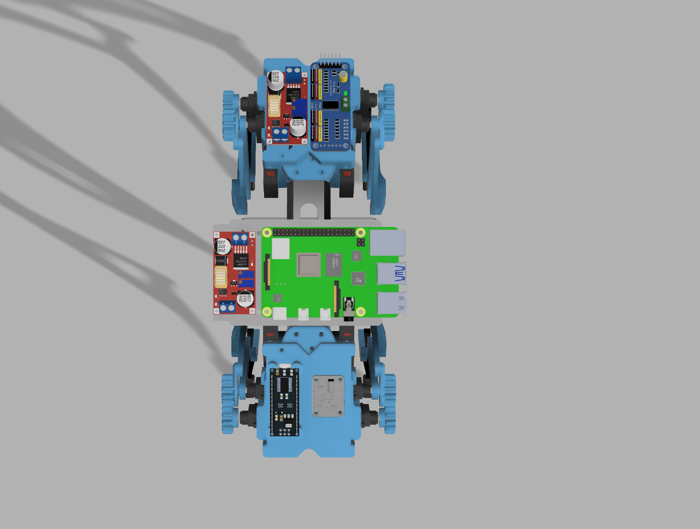

Overview
Terrain-adaptive quadruped robot implementing machine learning classification, Extended Kalman Filter sensor fusion, and inverse kinematics control. The system achieved 71% error reduction in position estimation by fusing leg odometry with IMU data, while adaptive gait parameters automatically adjust to detected surfaces (concrete, grass, gravel, sand). Complete development from CAD design through ROS2 simulation to hardware integration.
Performance Metrics
Technical Approach
Inverse Kinematics & Gait Control
- 3-DOF leg kinematics with geometric IK solver achieving <0.1mm endpoint accuracy
- Multiple gait patterns (trot, walk, bound, pace) with Bezier curve foot trajectories
- 50Hz real-time control loop validated in RViz simulation
- Terrain-adaptive parameters adjusting step height and timing based on surface detection
Trot gait simulation in RViz showing coordinated diagonal leg movements at 50Hz
Extended Kalman Filter State Estimation
- 15-state EKF fusing leg odometry (via Jacobian) with BNO055 IMU data
- 71% error reduction versus odometry-only baseline in 50-step simulation
- Zero-velocity updates during stance phase using FSR foot sensors
- Architecture mirrors Boston Dynamics Spot and MIT Cheetah approaches
Machine Learning Terrain Classification
- 1D CNN trained on IMU vibration signatures from time and frequency domain features
- Target 85-90% accuracy across 4-6 terrain classes (concrete, grass, gravel, sand)
- Real-time 10Hz inference using 128-sample windows from 100Hz IMU stream
- Training data collected from robot walking trials on labeled terrain surfaces
System Integration
Three-tier architecture: servos/legs → Raspberry Pi + controllers → power electronics
Mechanical Design
- Custom sensor mounts integrated into RoboFox body via boolean operations in Fusion 360
- Vibration-isolated IMU mount using PLA with 3M VHB foam tape achieving 60-70% damping
- Bottom-mounted battery bay (73mm × 34mm) with snap-lid retention for low center of gravity
- Integrated mounting bosses for Pi, Arduino, and buck converters eliminating separate plates
Electronics integration: 5mm thermal spacing between Pi and buck converters
Embedded Systems
- Raspberry Pi 4 running ROS2 Jazzy for high-level control and state estimation
- Arduino Nano reading FSR foot sensors, communicating via USB serial
- PCA9685 I2C PWM driver controlling 12 servos through shared I2C bus with BNO055
- Dual-rail power: XL4015 buck converters providing 5V @ 3A (Pi) and 6V @ 5A (servos)
- Star-topology common ground with proper wire gauge selection (16-26 AWG)
Software Stack
- Four ROS2 packages: description, control, state estimation, terrain classification
- Kinematic solver with forward/inverse kinematics and Jacobian computation
- Multi-gait generator with configurable patterns and Bezier swing trajectories
- EKF implementation fusing proprioceptive sensors at 50Hz
Key Learnings
- Sensor selection tradeoffs: BNO055 ($28) adequate for portfolio with foam damping, upgrade path to industrial MEMS documented showing awareness of application requirements
- Mechanical-software co-design: Integrated mounting features directly into body structure versus separate plates, requiring CAD proficiency and design-for-assembly thinking
- Power system constraints: Battery sizing (2200mAh for 25min runtime), thermal management (5mm component spacing), and bulk capacitor requirements for servo current spikes
- Professional documentation: KiCad schematics and comprehensive GitHub README demonstrate systems thinking beyond code implementation
Hardware Platform
12-DOF quadruped (250mm body, 185mm standing height) with 12× Corona DS-843MG servos, Raspberry Pi 4, BNO055 IMU, 4× FSR foot sensors, 2S 2200mAh LiPo, Arduino Nano, PCA9685 PWM driver. Components arriving January 8, 2026.
Technology Stack
Robotics: ROS2 Jazzy, RViz, Inverse Kinematics, EKF, Leg Odometry
ML: PyTorch/TensorFlow (1D CNN), LightGBM, ONNX
Embedded: Raspberry Pi 4, Arduino Nano, PCA9685 (I2C), BNO055 (9-DOF IMU)
CAD: Fusion 360, OpenSCAD, Blender, KiCad
Languages: Python, C++